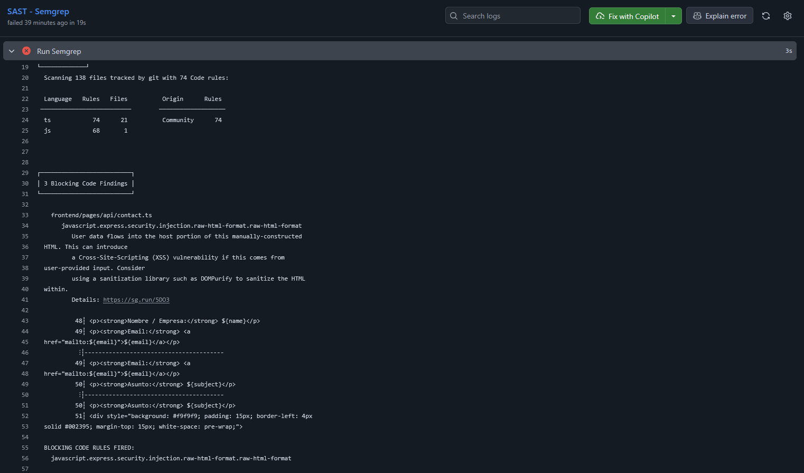
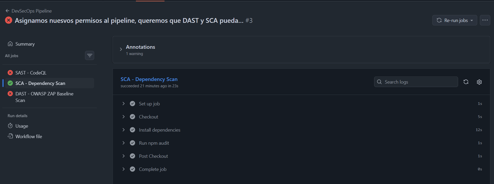
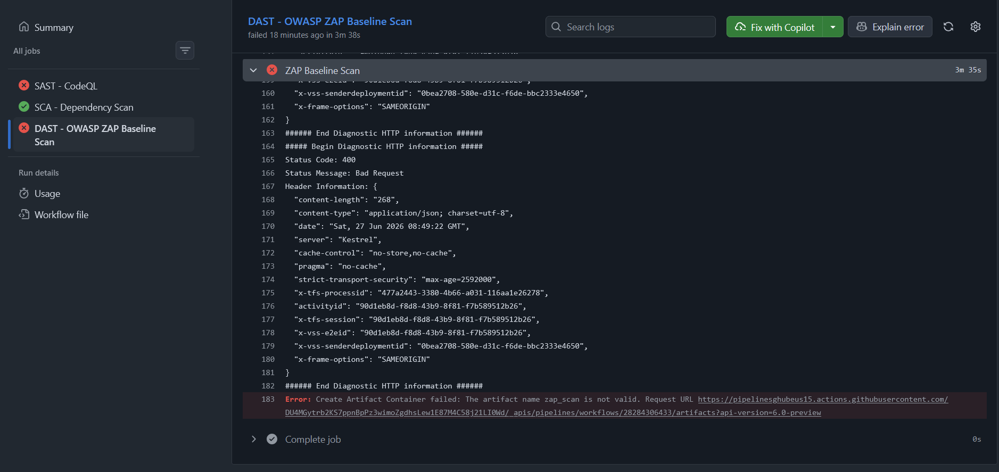
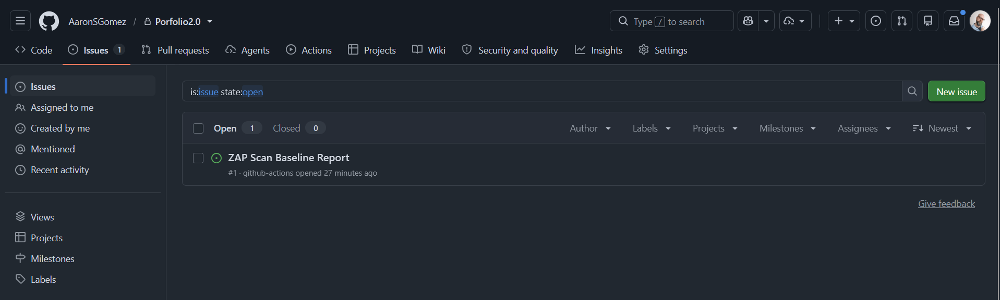
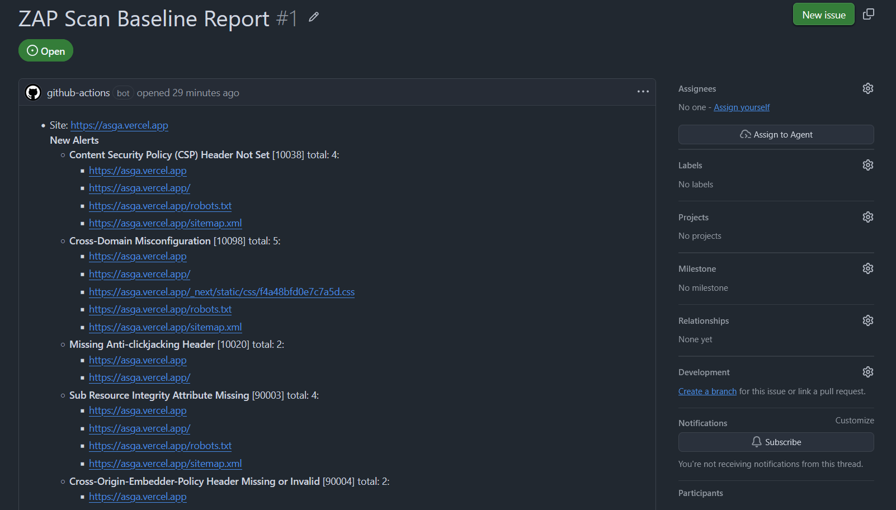

PASO 1 — Evidencias Técnicas
Reportes de Seguridad e Identificación de Hallazgos
Mapeo, clasificación y análisis técnico pormenorizado de las alertas de seguridad detectadas en la ejecución del pipeline inicial.
🔍 Análisis Estático (SAST) — Clasificación de Hallazgo en Código
El escaneo estático automatizado en el código fuente de la aplicación reportó una alerta en las directivas de tratamiento de datos de contacto:
- Archivo afectado:
frontend/pages/api/contact.ts - Líneas afectadas: 48–51
- Severidad: WARNING (Real)
- Vulnerabilidad: Cross-Site Scripting (XSS)
- Identificadores: CWE-79 | OWASP A07:2017, A03:2021, A05:2025
Descripción Técnica del Hallazgo
El motor de Semgrep detectó que la API construye de forma manual HTML dinámico interpolando variables del usuario directamente:
<p><strong>Nombre:</strong> ${name}</p>
<p><strong>Email:</strong> ${email}</p>
<p><strong>Asunto:</strong> ${subject}</p>🧱 Vector de Explotación y Propuestas de Mitigación
Mecánica del Ataque (PoC)
Un atacante remoto puede suministrar el siguiente payload malicioso a través del campo de texto de contacto:
<script>alert("XSS")</script>Si este bloque de texto se incrusta sin codificación en el HTML y el administrador abre dicho correo en un lector o cliente web vulnerable que renderice HTML dinámico sin filtrado, el script de JavaScript se ejecutará en su contexto local, facilitando la exfiltración de cookies de sesión o redirecciones maliciosas.
Propuestas Profesionales de Remediación
Opción A: Sanitización del Input (isomorphic-dompurify)
Filtrado lógico de tramas de scripting antes de construir la salida:
import DOMPurify from 'isomorphic-dompurify';
const safeMessage = DOMPurify.sanitize(message);Opción B: Escapado de Entidades HTML
Sustitución de caracteres de control para forzar la visualización como texto plano en lugar de código ejecutable:
function escape(str: string) {
return str
.replace(/&/g, "&")
.replace(/</g, "<")
.replace(/>/g, ">");
}
Captura: Alerta XSS en contact.ts señalada por Semgrep en el workflow.
📊 Clasificación Final del Hallazgo SAST
| Dimensión | Valoración |
|---|---|
| Tipo de Vulnerabilidad | Cross-Site Scripting (XSS) |
| Debilidad (CWE ID) | CWE-79 |
| OWASP Top 10 | A07:2017, A03:2021, A05:2025 |
| Probabilidad / Explotabilidad | Alta / Moderada |
| Severidad del Escáner | Warning (Real) |
| Corrección Recomendada | Escapado de entidades + Sanitización de Inputs |
📦 Análisis de Dependencias (SCA) — npm audit
El escaneo de composición de dependencias (SCA) en la raíz del frontend no identificó brechas críticas de seguridad en dependencias externas.

Captura: Consola indicando un estado correcto (verde) y el volcado en formato JSON del reporte de dependencias.
⚡ Análisis Dinámico (DAST) — OWASP ZAP
El escaneo dinámico pasivo (Baseline) sobre la URI de producción https://asga.vercel.app detectó 11 avisos (Warnings) estructurados.

Captura: Consola del job DAST detallando las reglas auditadas, con 56 superadas y 11 alertas registradas.
Reporte Técnico Inicial ZAP
Visualiza el archivo HTML original emitido por el escáner al inicio de las pruebas.
🛡️ Desglose y Detalles Técnicos de las Alertas Detectadas
Análisis individualizado de los principales fallos perimetrales de cabeceras identificados por el escaneo dinámico pasivo:
6.1. Re-examine Cache-Control Directives [10015] / [10049] / [10050]
Descripción: Ausencia de directivas restrictivas de almacenamiento de caché o retención en cliente.
Impacto y Riesgo: El navegador del cliente puede retener y cachear páginas dinámicas con información confidencial, facilitando la fuga de datos tras cierres de sesión. Al ser un portfolio estático público, el riesgo real es Bajo, aunque representa una brecha de buenas prácticas.
Mitigación: Configurar la directiva HTTP Cache-Control: no-store en endpoints lógicos o configurar caché inmutable para recursos puramente estáticos.
6.2. Missing Anti-clickjacking Header [10020]
Descripción: Omisión de la cabecera X-Frame-Options o su homólogo en CSP.
Impacto y Riesgo: Permite que un portal malicioso incruste la web en un iframe invisible para superponer botones engañosos y secuestrar interacciones del usuario. Riesgo real: Medio.
Mitigación: Servir la cabecera X-Frame-Options: DENY o declarar frame-ancestors 'none' en la CSP.
6.3. X-Content-Type-Options Header Missing [10021]
Descripción: Omisión del parámetro protector de MIME sniffing.
Impacto y Riesgo: El navegador intenta autodetectar el tipo de datos omitiendo la declaración del servidor. Un atacante podría subir código script camuflado como imagen (.jpg) para forzar su ejecución. Riesgo real: Medio.
Mitigación: Declarar y transmitir la cabecera X-Content-Type-Options: nosniff en todas las llamadas.
6.4. Content Security Policy (CSP) Header Not Set [10038]
Descripción: Inexistencia total de directivas restrictivas de orígenes de carga de scripts y estilos.
Impacto y Riesgo: Deja la web totalmente indefensa ante ataques XSS, pues el cliente cargará y ejecutará cualquier script inyectado desde cualquier servidor remoto. Riesgo real: Medio-Alto (Crítico al coexistir con la debilidad de Semgrep).
Mitigación: Establecer una cabecera de Content-Security-Policy acotando el origen de los recursos.
6.5. Permissions Policy Header Not Set [10063]
Descripción: Falta de delimitación de acceso a APIs físicas del dispositivo en el cliente.
Impacto y Riesgo: Un script comprometido podría solicitar acceso intrusivo a periféricos (cámara, micrófono, geolocalización) del navegador de las visitas. Riesgo real: Medio.
Mitigación: Enviar cabecera Permissions-Policy: geolocation=(), microphone=(), camera=().
6.6. Subresource Integrity (SRI) Attribute Missing [90003]
Descripción: Inexistencia de hashes de comprobación en enlaces de hojas de estilos o recursos procedentes de CDNs externos.
Impacto y Riesgo: Si el servidor de CDN de Google Fonts o similar es comprometido por un actor malicioso, la web cargaría los estilos infectados ejecutando código inyectado. Riesgo real: Medio-Alto.
Mitigación: Declarar atributos integrity y crossorigin en elementos cargados externamente o auto-alojar los archivos de fuentes locales.
📊 Matriz de Criticidad de las Alertas DAST
| Alerta (Regla ID) | Severidad | Impacto Estimado | Relevancia |
|---|---|---|---|
| Anti-clickjacking Header (10020) | Medio | Incrustación en iFrames para secuestro de clics. | Recomendado |
| X-Content-Type-Options (10021) | Medio | Ataques de suplantación de tipo de archivo (MIME sniffing). | Recomendado |
| CSP Header Missing (10038) | Medio-Alto | Inyección y ejecución arbitraria de scripts de terceros (XSS). | Crítico |
| Permissions Policy Missing (10063) | Medio | Invasión y lectura abusiva de APIs de cliente. | Recomendado |
| SRI Attribute Missing (90003) | Medio-Alto | Compromiso y envenenamiento de código servido por CDNs. | Importante |
| Cross-Domain Misconfiguration (10098) | Medio | Carga incontrolada de recursos multi-origen. | Relevante |
| Cache-Control Directives (10015 / 10049 / 10050) | Bajo | Fuga de información residual persistida en caché local. | Buenas prácticas |
| COEP Missing (90004) | Bajo-Medio | Incrustación desprotegida de recursos de orígenes cruzados. | Opcional |
🧩 Optimización en la Apertura de Incidencias en GitHub
Incidencia inicial de "Fatiga de Alertas": En las primeras ejecuciones del pipeline, el flujo de trabajo abría incidencias de forma incondicional por cada reporte o regla detectada (incluyendo avisos de severidad baja o media), saturando el gestor de tareas del proyecto.
Corrección técnica aplicada: Se integró un filtro selectivo mediante un script condicional que unifica todos los escaneos y calcula la severidad acumulada: TRIGGER_ISSUE=$(( TOTAL_CRITICAL + TOTAL_HIGH )). De esta forma, el pipeline solo abre un issue en GitHub si el contador de vulnerabilidades Críticas o Altas es superior a cero (-gt 0), dejando las alertas informativas, bajas o medias dentro del reporte consolidado de ejecución sin ensuciar el panel de desarrollo.
Issue Inicial creado de ZAP

Captura: Registro automático del reporte base subido a los Issues del repositorio.
Lógica de Alertas de Criticidad Alta

Captura: Issue unificado de alerta roja detallando los fallos críticos de seguridad detectados.